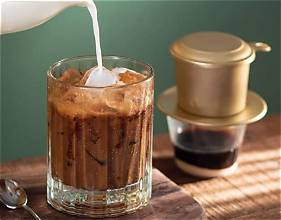
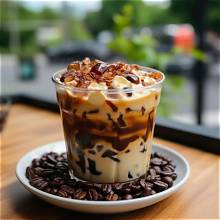
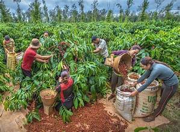

The phin filter
Most Vietnamese coffee is brewed with a phin, a small metal filter that sits on top of a cup. Hot water drips through the ground coffee slowly, which takes about five minutes.
Popular ways to drink it
These are three drinks you will find in almost every cafe:
- Cà phê đen: black coffee, served hot or iced.
- Cà phê sữa đá: coffee with sweetened condensed milk over ice.
- Cà phê trứng: coffee topped with a creamy whipped egg foam.
Where the beans come from
Vietnam is one of the largest coffee producers in the world. Most of the beans are Robusta, grown in the Central Highlands. Robusta has a bold, bitter taste, which is why it is often mixed with sweet milk.



Learn more
Read more about the drink on Wikipedia: Vietnamese iced coffee.